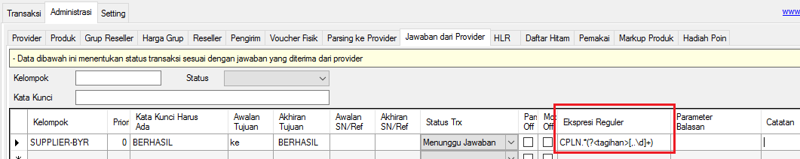
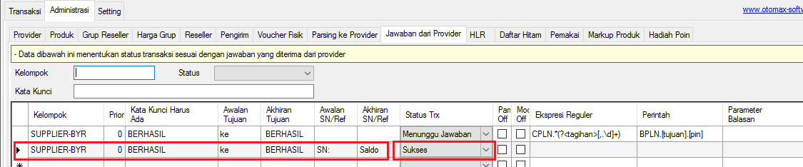

PPOB Postpaid/Paskabayar
Mulai versi 3.6.3 OtomaX telah mendukung transaksi PPOB Postpaid/Paskabayar namun hanya berlaku untuk edisi Ultimate, sehingga jika edisi OtomaX Anda belum Ultimate, upgrade dahulu klik disini; dan jika belum memiliki OtomaX, beli dahulu klik disini.
Dengan fitur ini Anda dapat memproses pembayaran tagihan listrik, telpon, PDAM, tagihan cicilan kendaraan, BPJS dan lain - lain dengan bekerja sama dengan Supplier PPOB Postpaid/Paskabayar mana saja yang Anda inginkan.
PERHATIAN:
Sebelum mensetting PPOB Postpaid/Paskabayar Anda harus mengetahui lebih dahulu hal - hal berikut:
- Alur kerja sistem yang digunakan supplier.
- Format - format cek tagihan dan bayar tagihan supplier setiap produk.
- Contoh - contoh balasan cek tagihan dan bayar tagihan supplier komplit untuk masing - masing produk.
Silahkan 3 poin diatas ditanyakan ke supplier Anda, baru kemudian dapat mulai melakukan pengaturan di OtomaX.
Untuk masing - masing jenis PPOB biasanya diperlukan 2 Kode Produk, yaitu kode produk untuk mengecek tagihan dan kode produk untuk membayar tagihan.
- Membuat kode produk cek tagihan.
- Masuk menu Administrasi -> Provider -> buat Kode Provider misalnya PPOB dan klik tombol Simpan.
- Masuk menu Administrasi -> Produk -> buat kode produk misalnya CEKPLN (untuk cek tagihan PLN); pada kolom Provider pilih PPOB; dan klik tombol Simpan.
- Masuk menu Administrasi -> Jawaban dari Provider -> buat penangkap jawaban untuk menangkap balasan cek tagihan dari supplier, tata caranya klik disini; dan pada kolom Kelompok isi SUPPLIER-CEK misalnya.
- Buat IM Hybrid HTH untuk memproses transaksi ke supplier, tata caranya klik disini; pada Label isi SUPPLIER-CEK misalnya; dan pada Kelompok Jawaban arahkan ke kelompok SUPPLIER-CEK.
- Masuk menu Administrasi -> Parsing ke Provider -> pada kolom Modul pilih SUPPLIER-CEK; pada Produk isi CEKPLN; pada Perintah isi dengan format cek tagihan supplier (tanyakan ke supplier Anda); dan klik tombol Simpan.
- Selesai.
- Membuat kode produk bayar tagihan.
- Masuk menu Administrasi -> Provider -> pastikan telah tersedia Kode Provider untuk PPOB misalnya PPOB.
- Masuk menu Administrasi -> Produk -> buat kode produk misalnya BYRPLN (untuk bayar tagihan PLN); pada kolom Provider pilih PPOB; centang checkbox Postpaid; pada kolom Harga Beli isi fee dari supplier diawali tanda minus (-), misalnya Anda mendapat free Rp2.000 isi -2.000; sementara kolom Harga Jual isi fee untuk Reseller Anda diawali tanda minus (-), misalnya Anda ingin memberikan fee Rp1.500 isi -1.500; dan terakhir klik tombol Simpan.
-
Masuk menu Administrasi -> Jawaban dari Provider -> buat penangkap jawaban untuk
menangkap balasan cek tagihan dari supplier, tata caranya klik disini; pada kolom Kelompok isi SUPPLIER-BYR misalnya;
dan pada kolom Status Trx pilih Menunggu Jawaban.

Tangkap total tagihan yang berada di balasan cek tagihan dari supplier dengan menggunakan RegEx dan simpan di parameter tagihan atau bill, tata cara membuat RegEx klik disini. Setelah RegEx dibuat masukkan di kolom Expresi Regular.

Arahkan kursor mouse ke kata Kelompok -> klik kanan -> klik Perintah atau (khusus v4.0.0 atau lebih tinggi) arahkan kursor ke kata Kelompok -> klik kanan -> pilih Select columns... -> centang checkbox: Perintah -> klik OK untuk memunculkan kolom Perintah.
Pada kolom Perintah isi format bayar tagihan supplier (tanyakan ke supplier Anda). Perhatikan gambar di bawah ini:
Buat penangkap jawaban untuk menangkap balasan bayar tagihan dari supplier, tata caranya klik disini; pada kolom Kelompok isi SUPPLIER-BYR misalnya; dan pada kolom Status Trx pilih Sukses.

- Buat IM Hybrid HTH lagi, tata caranya klik disini; pada Label isi SUPPLIER-BYR misalnya; dan pada Kelompok Jawaban arahkan ke kelompok SUPPLIER-BYR.
- Masuk menu Administrasi -> Parsing ke Provider -> pada kolom Modul pilih SUPPLIER-BYR; pada Produk isi BYRPLN; pada Perintah isi dengan format cek tagihan supplier (tanyakan ke supplier Anda); dan klik tombol Simpan.
-
Masuk menu Alat Penguji -> Penguji Jawaban -> pada box: Jawaban Provider
masukkan balasan cek tagihan; pada Kelompok Jawaban pilih SUPPLIER-BYR -> klik tombol
Tes -> pastikan di box: Hasil Pengujian berisi:
Status Trx = MENUNGGU JAWABAN
Perintah Balasan = BPLN.[tujuan].3478 (sesuai format bayar tagihan supplier Anda)Dan kemudian di box: Jawaban Provider masukkan balasan bayar tagihan; pada Kelompok Jawaban pilih SUPPLIER-BYR -> klik tombol Tes -> pastikan di box: Hasil Pengujian berisi:
Status Trx = SUKSES
Apabila Hasil Pengujian balasan cek tagihan dan balasan bayar tagihan belum seperti diatas, cek kembali penangkap jawaban.
- Selesai.
Catatan 1:
Harga Reseller = Tagihan + Harga Jual
Misal Tagihan: 10.000 dan Harga Jual: -1.500, maka
Harga Reseller: 10.000 + -1.500 = 8.500
Catatan 2:
Pada balasan cek tagihan yang dikirimkan supplier, pastikan dilampirkan total tagihan (tagihan + biaya admin
+ biaya lainnya jika ada). Apabila tidak demikian mintalah agar supplier melampirkannya.